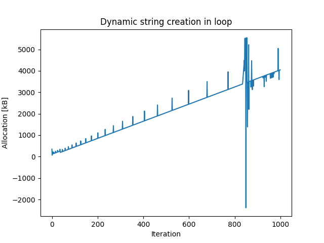

Note
Click here to download the full example code
Profiling memory leaks¶

Out:
-------------- Performance analysis -------------
Name | Executions | Mean time | Total time
--------+--------------+-------------+--------------
-------------------------------------------------
------------------------------- Memory analysis --------------------------------
Name | Executions | Mean size change | Total size change
-------------------------+--------------+--------------------+---------------------
nothing | 1 | 6.25391e+00 kB | 6.25391e+00 kB
one list | 1 | 6.74531e+01 kB | 6.74531e+01 kB
one list - and clear | 1 | 4.13281e+00 kB | 4.13281e+00 kB
dynamic string creation | 1000 | 2.01815e+00 kB | 2.01815e+03 kB
--------------------------------------------------------------------------------
import matplotlib.pyplot as plt
from sorts.profiling import Profiler
p = Profiler(track_memory=True)
#As the profiler data is also stored in Python tracked memory
# a diff of "nothing" will still result in more allocation of memory
# including initialization for structures and the like
p.snapshot('nothing')
p.memory_diff('nothing')
#this allocates memory
p.snapshot('one list')
lst = list(range(2000))
p.memory_diff('one list')
#and if we take care to delete the variable
#only profiling allocations are left over
del lst
p.memory_diff('one list', save='one list - and clear')
#this iteration changes allocation each iteration and does not clean up
lsts = []
for i in range(1000):
p.snapshot('dynamic string creation')
lsts.append('test'*i)
p.memory_diff('dynamic string creation')
print(p)
#so it might be a good idea to plot the trend
fig, ax = plt.subplots(1,1)
ax.plot(p.memory_stats['dynamic string creation'])
ax.set_title('Dynamic string creation in loop')
ax.set_xlabel('Iteration')
ax.set_ylabel('Allocation [kB]')
plt.show()
Total running time of the script: ( 0 minutes 2.740 seconds)